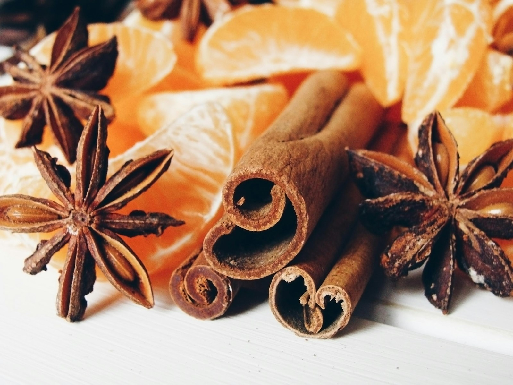
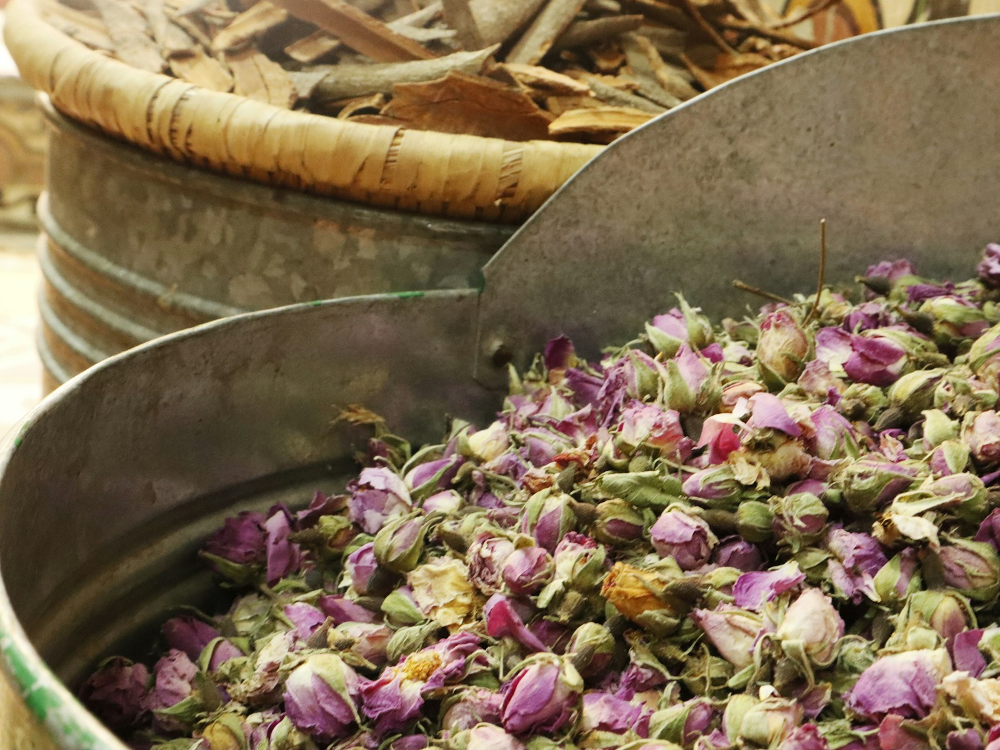

同一棵苦橙樹，可以萃取出三種精油。
花蒸餾出來是橙花，葉子和細枝蒸餾出來是苦橙葉，果皮冷壓出來是苦橙精油。同一棵樹、同一個學名，三支油聞起來卻完全不像：橙花甜而細緻，苦橙葉清新帶一點苦，果皮明亮，像剛剝開的橘子。
差別在植物的部位。花、葉子、果皮在植物身上做的工作不一樣，產出的香氣分子也不一樣。
精油種類有幾種分法？
上網查「精油種類」，會看到好幾種分類方式：
| 分法 | 看什麼 | 例子 |
|---|---|---|
| 植物科屬 | 這株植物是哪一科 | 唇形科（薰衣草、薄荷）、芸香科（甜橙、檸檬） |
| 化學成分 | 精油裡比例最高的分子 | 單萜烯類、酯類、醚類 |
| 萃取部位 | 精油從植物的哪裡來 | 根、木頭、樹脂、葉、花、果皮、種子 |
三種分法都對，各有用處。我挑精油時，先看萃取部位：部位看得見、摸得到，不用先背化學式，而且部位會連帶影響香氣和主要成分。下面依九個部位整理。
第一類：根部精油
植物在做什麼：根往下扎進土裡，吸水、吸養分，也把整株植物固定在原地，風再大都不會被吹走。
化學在做什麼：根部精油多半以倍半萜類為主，分子大、揮發慢，香氣沉、厚、帶土味。
代表精油：岩蘭草、穗甘松；薑是根莖，也常放在這一類。
適合陪的狀態：腦袋一直轉、停不下來，身體坐在椅子上，心不知道飄去哪的時候。根部的香氣，幫你把注意力拉回腳底。
第二類：木質調精油（樹幹）
植物在做什麼：樹幹撐起整棵樹，裡面的木質部一路把水分往上送。
化學在做什麼：大西洋雪松這類木質精油以倍半萜類為主，香氣溫暖、乾燥、穩重。
代表精油：大西洋雪松、維吉尼亞雪松。
適合陪的狀態：家裡、工作上大家都靠你，你卻想不起上一次靠著誰休息是什麼時候。
第三類：樹皮精油
植物在做什麼：肉桂精油取的是內層的樹皮，那是樹輸送養分的通道，也包覆、保護著樹幹。

化學在做什麼：錫蘭肉桂皮的主要成分是肉桂醛，約占五成半到七成半，香氣溫熱辛辣，像冬天手裡的一杯熱飲。
代表精油：錫蘭肉桂（樹皮）。
提醒：肉桂醛刺激性強，塗抹一定要高度稀釋（0.5% 以下），孕婦不要用。新手先從嗅吸開始。
第四類：樹脂類精油
植物在做什麼：乳香樹的樹皮被割開後，會滲出乳白色的汁液，接觸空氣後慢慢變硬，把傷口封住、擋住細菌。採乳香的人，就是一刀一刀割開樹皮，等它結成一顆顆淚滴狀的樹脂。
化學在做什麼：乳香的主要成分是 α-蒎烯，約占兩到五成，香氣清澈，帶一點木質和檸檬感。
代表精油：乳香、沒藥、安息香。
適合陪的狀態：心裡有一件說不太出口的往事，平常沒事，被某句話碰到時才發現它還在。
乳香也是人類用得最久的香料之一，東方三博士帶給耶穌的禮物裡就有它；東正教、天主教的儀式至今還在燃燒乳香。
第五類：葉片類精油
植物在做什麼：葉子負責光合作用和呼吸，整株植物的養分從這裡做出來。很多葉子摸一下就有味道，那股氣味可以趕走想來啃葉子的蟲。
化學在做什麼：葉片類的化學最多樣。茶樹的主要成分是萜品烯-4-醇，胡椒薄荷是薄荷腦，苦橙葉是乙酸沉香酯。同樣是葉子，聞起來差很多。
代表精油：茶樹、胡椒薄荷、苦橙葉、迷迭香、澳洲尤加利。
適合陪的狀態：一下子接收太多事、太多情緒，消化不了，也分不清哪些是自己的、哪些是別人的。
回到開頭那棵苦橙樹。苦橙常被拿來當砧木：把甜橙或檸檬的枝條，接在苦橙的根上。地上結的是別人的甜果子，地下撐著的，是苦橙自己的根。
在精油側寫裡，苦橙葉常被讀成這樣的人：為所愛的人全心付出，活成了別人的根，自己的枝條一直沒長出來。只是別忘了，同一棵苦橙樹，也開得出最香的橙花。
第六類：花香精油
植物在做什麼：花負責吸引蝴蝶和蜜蜂靠近，完成授粉。花的精油含量很少，玫瑰要用上好幾噸花瓣，才蒸餾得出一公斤精油。

化學在做什麼：真正薰衣草的主要成分是乙酸沉香酯和沉香醇，兩者比例接近；大馬士革玫瑰則以香茅醇、牻牛兒醇為主。香氣柔和、甜，有層次。
代表精油：大馬士革玫瑰、橙花、真正薰衣草、茉莉、完全依蘭。
適合陪的狀態：事情做得到，卻不太確定自己是不是被喜歡，不太敢讓自己被看見的時候。
有些花經不起高溫蒸餾，會改用溶劑萃取，得到的叫「原精」，例如茉莉原精、玫瑰原精，香氣更接近花本身。
第七類：柑橘類精油（果皮）
植物在做什麼：柑橘果皮表面那些小點點，就是一顆顆油囊。剝橘子時噴到手上的那一下，就是油囊破了。
化學在做什麼：甜橙的主要成分是右旋檸檬烯，約占九成以上；檸檬約占六到七成半。聞起來明亮、甜，讓人想深呼吸。
代表精油：甜橙、檸檬、葡萄柚、佛手柑。
萃取方式：果皮類多用冷壓，不用高溫蒸餾。香氣本來就在表層，輕輕一壓就出來了。
適合陪的狀態：太在意結果，好像沒有好的結局，前面的努力都不算數。（想更懂果皮，可以讀〈果皮的兩個面向〉）
提醒：檸檬、佛手柑有光敏性，塗抹後 12 小時內避免日曬；佛手柑可以選「去光敏（FCF）」的版本。
第八類：果實類精油
植物在做什麼：果實包著種子，是植物替下一代準備的糧倉，也是保護。
化學在做什麼：杜松果的主要成分是 α-蒎烯，黑胡椒以檸檬烯、檜烯為主，香氣清爽、帶辛香，常用來暖身、幫助消化。
代表精油：杜松果、黑胡椒、山雞椒。
適合陪的狀態：想很多、擔心很多，事情在腦袋裡排演好幾遍，遲遲踏不出第一步的時候。
第九類：種子類精油
植物在做什麼：種子要等溫度、水分、時機都對了才發芽，條件不夠就一直等。一旦發芽，力量驚人。
化學在做什麼：很多種子類精油來自廚房裡的香料。甜茴香的主要成分是反式茴香腦，約占七到八成半，屬於醚類，香氣甜、帶一點八角味，常用來幫助消化。
代表精油：甜茴香、小荳蔻、芫荽籽、藏茴香。
適合陪的狀態：累到對生活沒胃口，日子過得像一碗白粥。想做的事還在，只是提不起力氣。
部位是天氣，人類圖是地圖
認識九個部位以後，可以把它放進我常用的比喻：精油是天氣，人類圖是地圖。
精油側寫看的是天氣：你最近的狀況如何，此刻在你身上，正在發生什麼樣的故事。你盲抽到的三支油來自哪些部位，就是這段故事的線索。人類圖看的是地圖：你天生的樣子，例如你容易從哪裡接收別人的能量、用什麼方式做決定最適合你。
天氣三天兩頭在變，地圖跟著你一輩子。兩個一起看，才分得出這場雨是你走到哪都容易遇到，還是剛好這陣子下得比較久（兩個怎麼一起看，可以讀〈精油側寫結合人類圖是什麼？〉）。
新手怎麼開始？先知道這幾件事
- 先選一個部位，挑一支聞起來喜歡的就好，不用一次買齊。
- 用法從最簡單的開始：滴 1～2 滴在面紙上嗅吸，或擴香儀加水滴 3～5 滴。
- 要塗在皮膚上，一定先稀釋：10ml 植物油加 2～6 滴精油（約 1～3%）；肉桂這類刺激性強的油，濃度要更低。
- 原液不要直接塗，也不要喝。
- 孕婦、嬰幼兒、有疾病或正在服藥的人，使用前先問醫師或專業芳療師。
想知道此刻你身上發生了什麼故事？
讀到這裡，你可能已經在某一兩個部位停了一下，覺得「這好像在說我」。
陪伴會談時，你會盲抽三支精油，我們先看它們分別來自哪個部位，再從化學和香氣，一起讀出這段時間在你身上發生的故事。想看天生的地圖，再把人類圖放進來。
- 先認識精油側寫：〈精油側寫是什麼？〉
- 最近心情低落：〈情緒低落用什麼精油？先分清是哪一種低落〉
- 想聊聊，加入官方 LINE：@864ihpsq
- 想直接約時間：看陪伴會談的空檔
可以約線上，也可以到桃園的實體空間（實體目前限女性，男性朋友可以約線上）。
本文為精油生活化知識分享，非醫療診斷或治療建議。化學比例為常見範圍，實際以各品牌的成分檢測報告為準。
如果你也想更完整地看懂自己此刻的狀態
🌿 1 小時陪伴 NT$1,600（線上或實體）
📍 實體服務地點：台灣桃園（目前限女性；男性朋友可以預約線上陪伴）
🔗 查看完整服務項目
📩 預約與詢問：私訊 Facebook 粉專，或加入官方 LINE：@864ihpsq